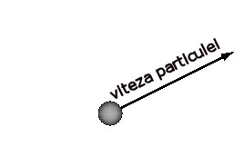
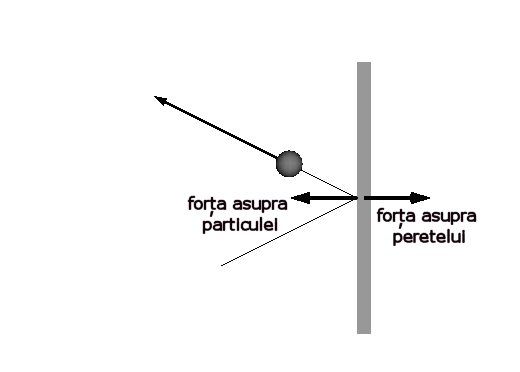
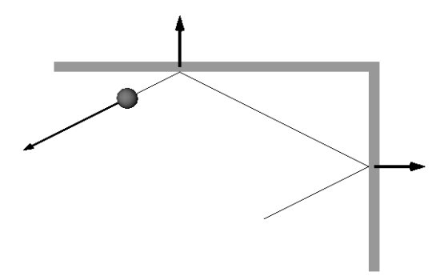
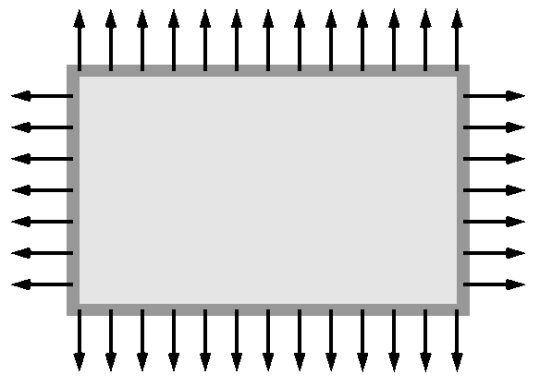
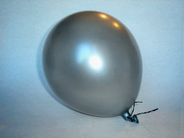
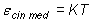

Elemente de termodinamică. |
Noţiuni termodinamice de bază
|
B-7. Agitaţia termică şi temperatura
Presiunea unui gaz depinde de temperatura acestuia. Am folosit această dependenţă pentru a găsi cea mai mică temperatură.
Ce legătură există oare între agitaţia termică şi temperatură?
 Provocarea 7-1
Provocarea 7-1
Imaginează−ţi o particulă izolată (o moleculă alcătuită dintr−un singur atom, ca în cazul heliului). Viteza
particulei este, la un moment dat, cea din figura 7−1.
|  |
Figura 7-1. O particulă izolată, în mişcare faţă de observator. |
Atâta timp cât particula nu interacţionează cu nimic altceva, cum te aştepţi să se mişte aceasta?
Conform principiului inerţiei din mecanica newtoniană, în lipsa interacţiunilor particula va continua să se mişte în linie
dreaptă, fără vreo modificare a vitezei.
Provocarea 7-2
Dacă în drumul său particula întâlneşte un perete masiv, alcătuid din numeroase alte particule, ce te aştepţi să se
întâmple când particula va interacţiona cu peretele?
Conform principiului fundamental din mecanica newtoniană, interacţiunea dintre particulă şi perete va modifica vitezele
partenerilor de interacţiune. Particula va ricoşa pe perete, fiind împinsă spre "interior", în timp ce peretele va fi
împins spre "exterior", ca în figura 7−2.

Figura 7-2. Particula interacţionează cu peretele. Particula analizată este reprezentată
exagerat de mare în raport cu dimensiunile peretelui.
După ciocnirea dintre particulă şi perete este perfect elastică şi peretele este atât de masiv încât modificarea vitezei
acestuia este neglijabilă, se modifică doar orientarea vitezei particulei, nu şi mărimea acesteia.
Provocarea 7-3
Dacă particula este înconjurată din toate parţile de pereţii unei cutii, cum te aştepţi să se mişte particula?
Particula va ricoşa succesiv pe pereţii cutiei, fără să încetinească! În locul şi în momentul fiecărui impact, peretele
lovit va fi apăsat înspre exterior, ca în figura 7−3.

Figura 7-3. În locul şi momentul fiecărui impact, pereţii cutiei sunt apăsaţi înspre
exterior.
Provocarea 7-4
Imaginează−ţi câteva sute de miliarde de miliarde de particule care se agită în cutie. Care te aştepţi să fie efectul
agitaţiei acestora asupra pereţilor cutiei?
Când într−o cutie se agită atât de multe particule, ciocnirile cu pereţii sunt atât de dese încât putem considera
că, în permanenţă şi peste tot, pereţii cutiei sunt apăsaţi înspre exterior, ca în figura 7−4.

Figura 7-4. Sute de miliarde de miliarde de particule se agită şi apasă în permanenţă
pereţii cutiei.
Tenta uniformă de gri din figura 7−4 este poate cea mai bună reprezentare a unui număr atât de mare de particule
având dimensiuni atât de mici în raport cu dimensiunile cutiei.
Forţele asupra pereţilor cutiei sunt repartizate practic uniform pe toată suprafaţa acestora. Gradul de concentrare al forţelor
repartizate pe suprafeţe este caracterizată cantitativ de presiune, astfel că:
 Agitaţia unui număr mare de particule care se mişcă independent într−o
incintă închisă are ca efect exercitarea unei presiuni înspre exterior asupra pereţilor cutiei.
Agitaţia unui număr mare de particule care se mişcă independent într−o
incintă închisă are ca efect exercitarea unei presiuni înspre exterior asupra pereţilor cutiei.
Când umfli un balon, agitaţia moleculelor de aer pătrunse în balon exercită o presiune înspre exterior asupra pereţilor
balonului. Această presiune menţine balonul umflat (figura 7−5).
|  |
Figura 7-5. Agitaţia moleculelor de aer din balon exercită o presiune înspre
exterior asupra peretelui balonului, menţinând balonul umflat. |
În experimentul 6−1, presiunea aerului din flaconul de sticlă se datora agitaţiei moleculelor din aerul aflat în
interiorul flaconului.
Când particulele care se agită se ciocnesc între ele, are loc un transfer de energie cinetică întotdeauna de la particula
mai energică la cea mai puţin energică. După multe ciocniri, energiile cinetice medii ale particulelor se uniformizează.
Uniformizarea temperaturii pentru sistemele care interacţionează termic este de fapt uniformizarea energiilor cinetice
medii cu care se agită particulele!
Temperatura absolută a unui sistem termodinamic este măsura energiei
cinetice medii de agitaţie termică a particulelor care alcătuiesc sistemul.
Dacă am fi ştiut aceasta de la început, temperatura ar fi fost chiar energia cinetică medie de agitaţie termică.
Pentru că deja am ales să măsurăm temperatura în kelvini (nu joule), relaţia dintre energia cinetică medie de agitaţie
termică şi temperatura absolută este:

Constanta K, exprimată în J/K, poate fi determinată măsurând pur şi simplu câtă energie trebuie furnizată pentru a mări
temperatura cu un kelvin. Acesta este subiectul capitolului care urmează!